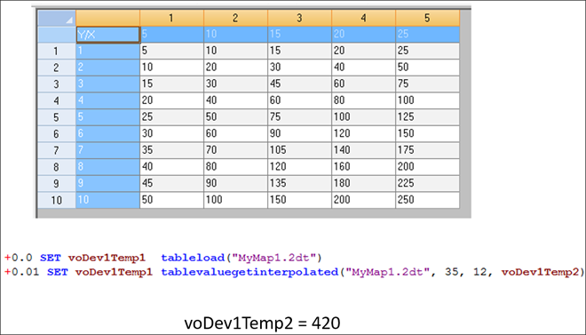

iTest User's Guide
This document discusses advanced functionality for manually managing map tables.
Map tables can be managed using the following VCL function:
Sets a channel to an interpolated value based on an X and Y coordinate within a map table. This function uses the TableFilePath= setting in the powertek.ini file as the default location to find the referenced .2dt table. Upon completion, either a zero (success) or a negative number (error) is returned.
 |
NOTE: | If the map table has not been enabled in Properties, it must be loaded into memory using the TableLoad() VCL function prior to any other Map Table or Schedule VCL function being sent. |
tablevaluegetinterpolated(<TableName>,<X>,<Y>,<ResultChannel>)
TableFilePath= setting in the powertek.ini file. (Defaults to $SUPPORTDIR\SchedulesAndTables if setting not present.)Return Values and Descriptions
| Return Value | Description |
| 0 | Table operation successful. |
| -1 | Table operation failed. |
| -2 | Table error, not loaded. |
| -3 | Table error, function not supported. |
| -4 | Page error, page not found. |
| -5 | Page error, bad index value. |
| -6 | Page error, invalid operation. |
| -7 | Page error, keyword not found. |
| -8 | Page error, data not cellwise. |
| -9 | Function error, bad parameter value. |
| -10 | Table error, file not found. |
| -11 | Function error, bad parameter type. |
| -12 | Table warning, exists in memory. |
| -13 | Table error, insufficient memory. |
* example VCL uses the example from the Map Table Format section
set voFuncStatus TableLoad("TestMap.2dt") !! load the table into memory
set voFuncStatus tablevaluegetinterpolated("TestMap.2dt", 70, 4.5, vo2DTableVal)
* results in voFuncStatus being set to 0 (success) and vo2DTableVal being set to 45
set voFuncStatus tablevaluegetinterpolated("TestMap.2dt", 5, 4, vo2DTableVal)
* result in voFuncStatus being set to 0 (success) and vo2DTableVal being set to 5
|
NOTE: | The interpolate function extrapolates once out of bounds of the map. |
Map Boundary Example
